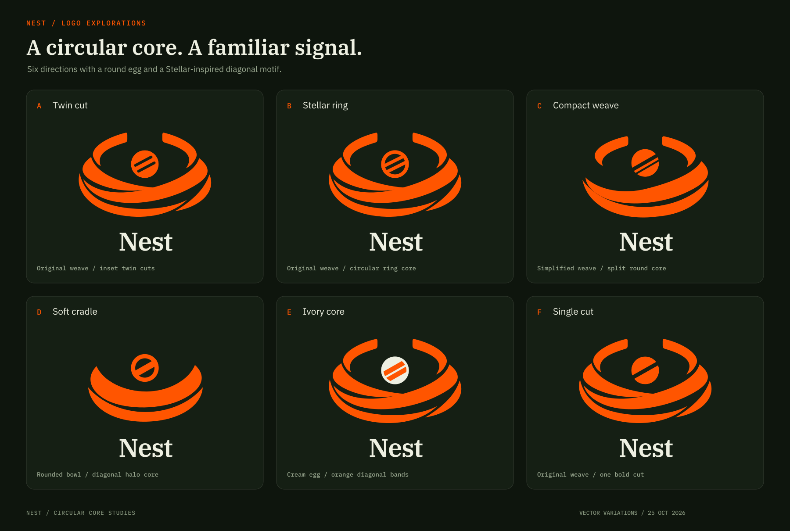
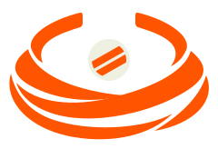

ATwin cut
The closest to the original. Internal cuts preserve an uninterrupted round egg edge.
Six logo directions using a circular egg and Stellar-inspired diagonal details. A, B, E and F retain the original weave; C and D simplify the cradle. Each option includes a transparent symbol and an outlined wordmark lockup.

The closest to the original. Internal cuts preserve an uninterrupted round egg edge.
The clearest Stellar reference: a circular ring with two diagonal bands contained inside it.
Broader bands and fewer crossings. A round solid core is split by two diagonal cuts.
The simplest silhouette: a two-band bowl holding a round halo with one diagonal band.

A cream egg relates to the 3D cover. Orange bands sit inside its circular boundary. For dark surfaces.
A restrained signal: one bold cut keeps the circular core simple.